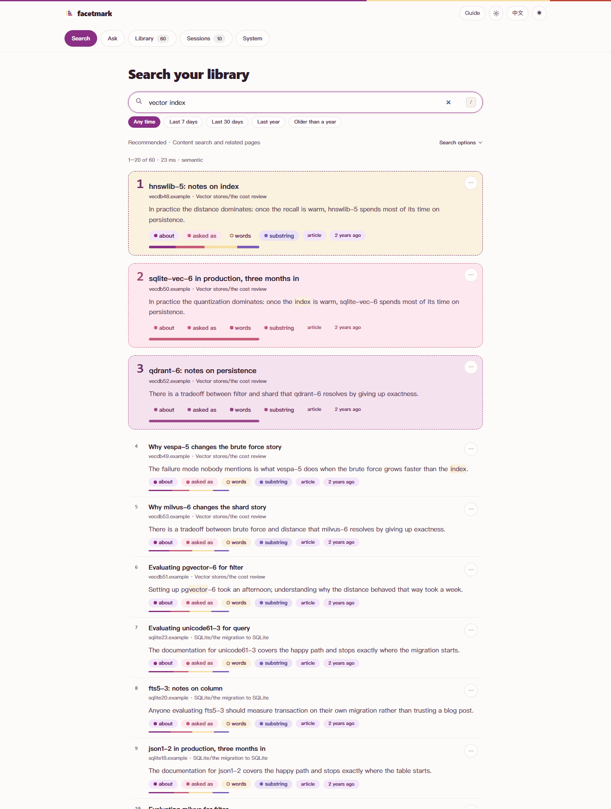
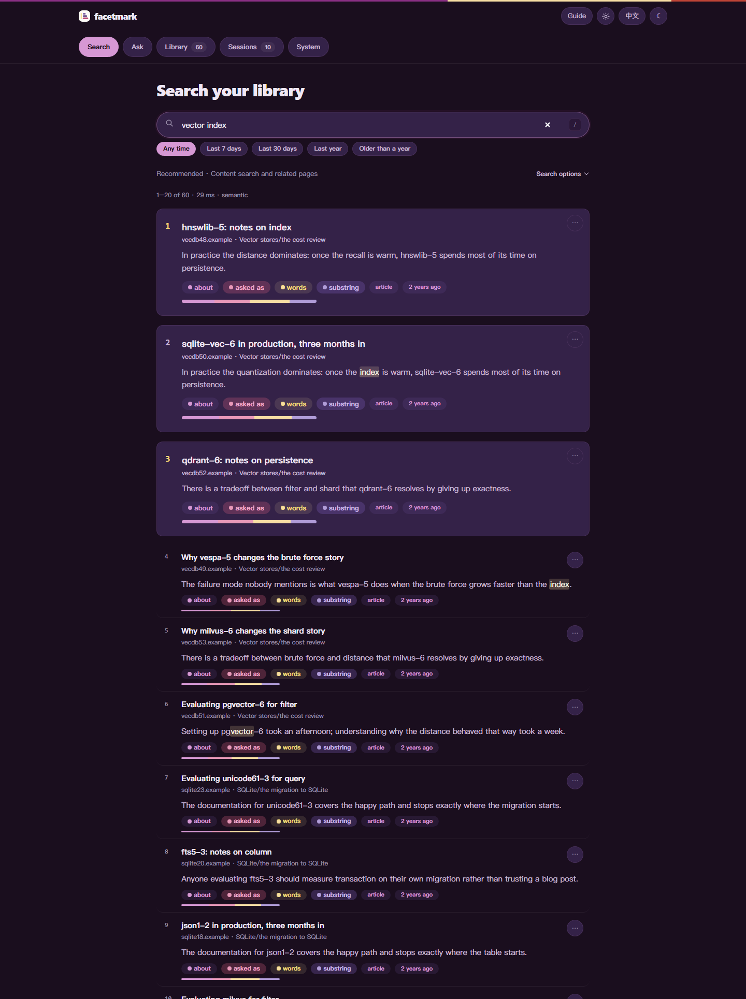

Install and verify#
Use Python 3.10 or later on Windows, macOS or Linux. Run the commands in a terminal; use python3 if python is unavailable.
python --version
python -m pip install facetmark
facetmark --versionThe last command should print a version. If the executable is not found, try python -m facetmark --version; the module entry point also accepts the commands below.
Import bookmarks#
On your own computer, import directly from a Chromium-based browser. Close the browser first, then run:
facetmark importFor Firefox, Safari or a server deployment, export bookmark HTML and place it on the machine running facetmark. Keep quotes around paths containing spaces.
facetmark import "bookmarks.html"
facetmark statsImport reports inserted, updated and skipped entries; stats should show a non-zero bookmark count. Your original browser bookmarks are unchanged. If no browser profile is found, use an HTML export.
Choose how to search#
Keyword search works without a model. Add an online or local embedding model when you want to search by meaning.
Online models
Create a .env file in the working directory used to run the commands. This example uses an OpenAI-compatible endpoint; model names must match your provider.
FACETMARK_BASE_URL=https://api.openai.com/v1
FACETMARK_API_KEY=sk-your-key
FACETMARK_CHAT_MODEL=gpt-6-luna
FACETMARK_EMBED_MODEL=text-embedding-3-small
FACETMARK_EMBED_DIM=1536Chat and embeddings are separate capabilities. Online models receive relevant text and queries. Use Settings → Test connection to verify both before processing the full library.
Local embeddings
python -m pip install "facetmark[local]"Use the following settings in .env. The first run downloads model files; once available, embeddings are computed on the machine running the service.
FACETMARK_EMBED_BACKEND=local
FACETMARK_LOCAL_EMBED_PATH=BAAI/bge-m3
FACETMARK_EMBED_MODEL=BAAI/bge-m3
FACETMARK_EMBED_DIM=1024Build the index#
facetmark index
facetmark statsIndexing fetches pages, prepares summaries and vectors, and builds sessions and links. The stages depend on your model settings. Fetching respects site limits; a large library can take time.
Check text coverage and content-vector counts in Library. A vector count does not mean every page body was fetched; title-only bookmarks can also have derived indexes.
To check the flow first, use facetmark index --no-fetch to skip downloads. Run facetmark index later to fetch content; unchanged stages are reused.
Open the app and search#
facetmark serveKeep the terminal running and open http://127.0.0.1:8787/app on the same computer. Use the port printed in the terminal. Try a word you know appears in a saved title before testing descriptive searches.


Server access and administration#
Run commands on the server that holds the library. 127.0.0.1 on your laptop refers to that laptop, not the server. The app at a public hostname requires a pairing token.
facetmark tokenRun this on the server and enter the token in your own app pairing form. It grants access to the library; keep it private. Settings, imports and indexing also require a loopback connection. Use SSH forwarding for remote administration.
ssh -N -L 8788:127.0.0.1:8787 your-user@your-serverReplace the username and server address, keep the SSH command running on your computer, then open http://127.0.0.1:8788/app. If administration is still unavailable, check whether the server sets FACETMARK_ADMIN_API=false.
Understand results and sources#
Result badges identify matching signals. “Questions this page may answer” in details are model-generated, not search history. A summary can be inferred from a title; the interface labels that case.
- Default: content vectors, graph expansion and time decay when embeddings are available.
- Search options: compare other retrieval combinations; some add model calls.
- Related results: shown separately from ranked matches for further browsing.
- Synthesis: answers use stored summaries or snippets. Citations help trace sources; verify the original text.
Troubleshooting#
| Symptom | Next step |
|---|---|
| Cannot open the app | Confirm serve is running. If the port is occupied, run facetmark serve --port 8788 and use that port. |
| Pairing prompt / 401 | Run facetmark token on the service machine and pair again. |
| Settings unavailable / 403 | Use a loopback address or the SSH tunnel above; a token does not remove administration restrictions. |
| Keywords work, paraphrases do not | Check the embedding connection, dimensions and content-vector count, then index again. |
| Provider returns 404 / 429 | 404: verify the full provider base URL and model name. 429: reduce concurrency and follow provider retry guidance. |
facetmark doctor
facetmark statsIf it still fails, record the version, steps and redacted error. Read the troubleshooting reference.